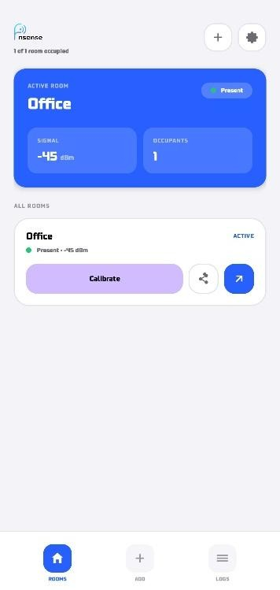
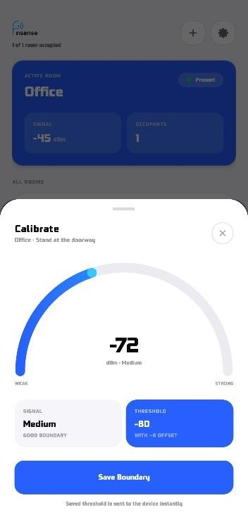
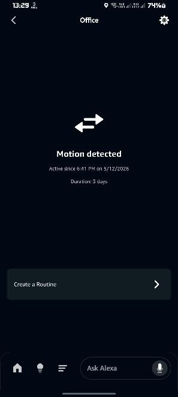
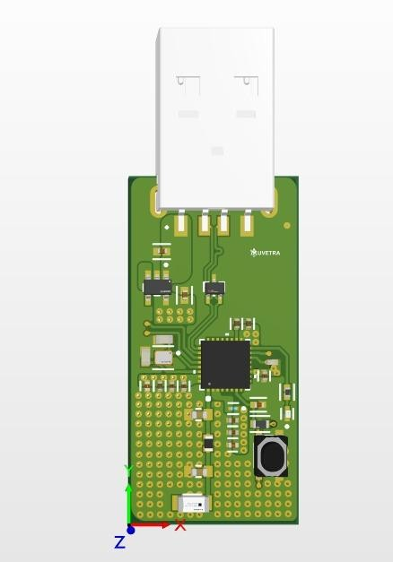
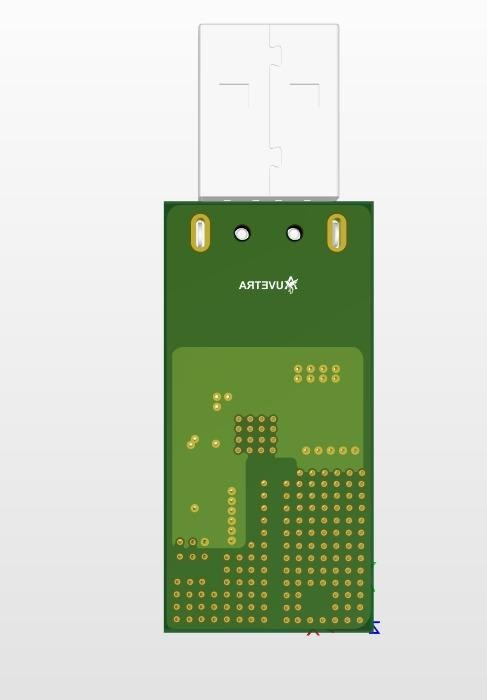

I built a cost-effective BLE-based presence system that leverages the Bluetooth of microcontrollers and mobile devices — accurate detection without dedicated hardware tags in every space. It's part of my engineering background — and I now know its attack surface from the inside. See the security perspective ↓
To build a cost-effective BLE-based presence system leveraging the Bluetooth capabilities of microcontrollers and mobile devices — enabling accurate detection and monitoring without dedicated hardware tags in every space.
Presence from ubiquitous devices. Leveraged the built-in BLE stack of MCUs paired with mobile-device Bluetooth to detect and confirm human presence using RSSI (dBm) signal strength and UUID identification.
No expensive infrastructure. Eliminated the need for dedicated RFID or UWB infrastructure by reusing BLE-capable devices already present in the environment.
Purpose-built mobile app. Delivered a dedicated mobile application for device provisioning, configuration and live status monitoring of all BLE nodes in the network.
Voice-driven automation. Integrated with Amazon Alexa, enabling occupancy-based voice automation and smart home/office control triggered by BLE presence events.
Multi-device by design. Handled multiple concurrent devices, differentiating them by UUID to avoid false positives and enable per-device tracking logic.
Delivered end-to-end as a mobile application, custom PCB and Alexa device dashboard — providing live RSSI views, UUID-based device management and presence-triggered smart automation.





Because I built this stack, I can see exactly where it would be attacked — and how I'd defend it as an OT security engineer.
Attack surface. BLE is sniffable and spoofable — forged UUIDs or manipulated RSSI could fake presence — and the MQTT broker plus mobile provisioning add further surface.
Secure by design. Per-device UUID identification limits trivial false positives and enables per-node logic.
How I'd harden it. Add authenticated/encrypted BLE, anti-spoofing on device identity, and TLS with authentication on the MQTT broker.